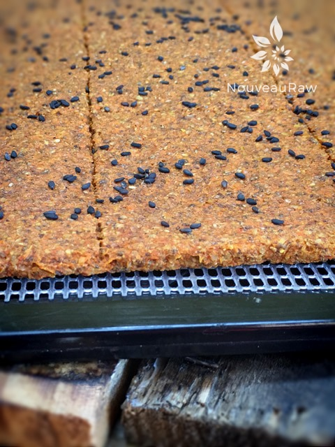
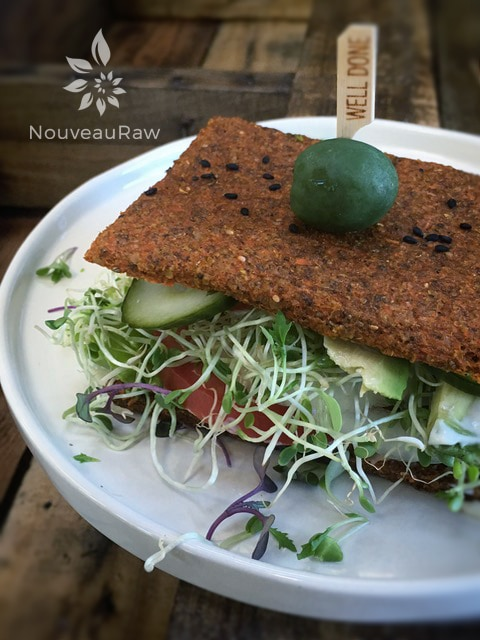
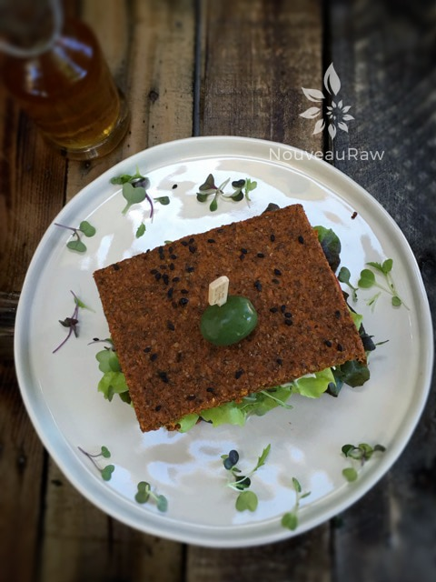

Cajun Bread

~ raw, vegan, gluten-free, nut-free, paleo ~
This recipe was inspired by a 20+ pound bag of carrots that somehow made its way into my house, plopped on the table, then fell into a chair, and just sat there staring at me like it was utterly exhausted. Meanwhile, I was just as worn out—hair stuck to my face, dirt under my nails—because I’d spent the day at my parents’ place helping harvest all the root veggies from their Alaskan midnight-sun garden.
Now, I know you might be feeling sorry for me… slave labor and all. (Okay, maybe just a little teasing.) But don’t let my moaning fool you—I absolutely LOVE digging up root veggies from rich, black soil. While we work, play, and sleep, these hidden treasures are growing right beneath our feet. That’s what I call real food magic.
After what felt like hours of rest (okay, maybe not hours, but it sure felt like it), I finally got up, took a shower, cleaned my soil-packed fingernails, and spritzed myself with rose water. Feeling refreshed, I turned my attention to those patiently waiting carrots in the kitchen.
Since I had just finished a juice fast, juice was the obvious first step. Soon, I found myself with a massive bowl of carrot pulp. Waste not, want not—so I decided to transform that pulp into a raw bread base. Spoiler alert: it was a fantastic idea.
When I started eating healthier, bread was definitely at the top of my “rethink this” list. I was eager to test my “skills” and see what I could create. To my delight, this bread became a huge hit—not just for me but for my husband and anyone I shared it with. That was back in 2010, and as of 2016, my husband still happily devours two sandwiches made from this recipe in one sitting. It’s become a staple in our kitchen.
This bread pairs magically with every veggie I throw at it. It’s moist, semi-spongy, bursting with flavor, and holds together perfectly—bite after bite—until all that’s left is a crumb… which I’m always quick to snatch up. blessings, amie sue
Yields 12 1/2 x 13″ tray
- 1 1/2 cups (240 g) packed carrot pulp
- 1 1/2 cups carrot juice
- 1 cup water
- 1 cup flax seed flour
- 1/2 cup chia seed flour
- 3 Tbsp sesame seeds
- 3 Tbsp Cajun spice (see below)
- 2 Tbsp cold-pressed olive oil
- 1 tsp Himalayan pink salt
Topping:
- Sprinkle black sesame seeds on top
Preparation:
- In a large bowl or food processor, combine the carrot pulp, carrot juice, water, ground flax and chia seeds, sesame seeds, Cajun spice, oil, and salt. Process until it turns into a smooth batter.
- If you don’t have Cajun seasoning, combine the following spices and shake well: 2 1/2 Tbsp paprika, 4 tsp dried oregano, 1 tsp Himalayan pink salt, 1 tsp garlic powder, 1 tsp white pepper, 1 tsp black pepper, 1 tsp ground red pepper, and 1 tsp onion powder. You will have extra.
- Spread mixture on non-stick dehydrator sheets and score into bread size pieces. Make them as big or small as you wish.
- Dehydrate at 145 degrees (F) for 1 hour, then reduce to 115 degrees (F) for 4 hours.
- If you don’t have non-stick dehydrator sheets, you can use parchment paper but not wax. Food sticks to wax when drying.
- Partway through the dry time, remove from the dehydrator, and flip. To flip, place a dehydrator plastic mesh screen on top of the bread, and cover with a dehydrator tray. Flip the entire assembly, remove the top tray and peel the non-stick sheet from the bread.
- Return to the dehydrator and continue to dehydrate for 6 more hours, until the desired consistency is reached.
- Store in an airtight container for 7 days in the fridge.
Culinary Explanations:
- Why do I start the dehydrator at 145 degrees (F)? Click (here) to learn the reason behind this.
- When working with fresh ingredients, it is essential to taste test as you build a recipe. Learn why (here).
- Don’t own a dehydrator? Learn how to use your oven (here). I do, however honestly believe that it is a worthwhile investment. Click (here) to learn what I use.




© AmieSue.com